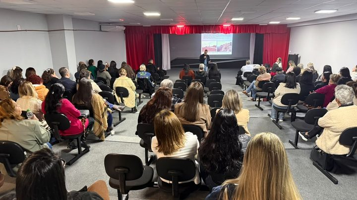

Itapema · Cidade
Itapema · CidadeInscrição para o Desfile de 7 de Setembro em Itapema vai de 19 a 25 de agosto, só por e-mail
O dia do ano em que a cidade inteira vê a Banda de perto, na Beira Mar.
Quatro pódios em uma viagem só, e o principal deles é o de campeã. A Banda chega aos 20 anos ganhando fora de casa.
Em 30 segundos · Modo de Leitura, formato original Santa Informa
A Banda Municipal de Itapema foi campeã na categoria Banda Musical de Marcha Sênior no Concurso de Bandas e Fanfarras realizado em União da Vitória, no Paraná.
O grupo ainda levou o 1º lugar em Mor de Comando Sênior, o 2º em Balizador Sênior e o 3º com o Corpo Coreográfico Sênior. São quatro pódios de uma vez.
A Banda Municipal completa 20 anos em 2026.
Poder PúblicoPublicada em Redação Santa Informa
Banda de marcha é coisa que a cidade só vê pronta. O que aparece na avenida em setembro é instrumento afinado e passo no lugar, e por trás disso tem um ano inteiro de ensaio, com repetição, correção e gente aprendendo a marchar antes de aprender a tocar. É essa rotina que a Banda Municipal de Itapema acabou de transformar em título fora de casa.
No Concurso de Bandas e Fanfarras realizado em União da Vitória, no Paraná, Itapema foi campeã na categoria Banda Musical de Marcha Sênior, que é a disputa principal, a do conjunto inteiro tocando e marchando junto.
Os outros três pódios são de categorias que julgam pedaços específicos da apresentação. O Mor de Comando Sênior, primeiro lugar, avalia quem comanda a banda na frente. O Balizador Sênior, segundo lugar, é o solo de bastão. E o Corpo Coreográfico Sênior, terceiro lugar, é o grupo de bandeiras e movimento que acompanha a música.
A Banda Municipal completa 20 anos em 2026. Nesse tempo virou a coisa que representa Itapema em apresentação, evento e competição, dentro e fora do estado. União da Vitória fica no interior do Paraná, colada em Porto União, do lado catarinense da divisa, e é uma das cidades que recebem esse circuito de bandas e fanfarras.
Para a secretária de Cultura, Ana Vedana, o resultado é de trabalho coletivo. “É uma alegria enorme ver a nossa Banda Municipal novamente levando o nome de Itapema ao alto do pódio. Cada conquista é resultado de muitas horas de ensaio, comprometimento e dedicação dos nossos integrantes e de toda a equipe”, disse.
Competição fora do estado não serve só para trazer troféu. Serve para o integrante ver como as outras bandas fazem, ouvir arranjo diferente e voltar querendo tocar melhor. A Prefeitura chama isso de intercâmbio, e é o que puxa o nível para cima ano a ano.
Itapema tem a temporada de eventos começando: o desfile de 7 de setembro, com inscrição de entidades aberta esta semana, e a festa açoriana em novembro. Banda em boa fase chega bem na hora.
O resumo de 30 segundos está no topo e a versão completa é o texto acima. Aqui ficam as três leituras da casa sobre o mesmo assunto.
Clara, a otimista
Quatro pódios de uma vez, e o principal deles é o do conjunto inteiro. Isso não sai de sorte, sai de ensaio.
E tem uma coisa boa que o troféu não mostra. Banda municipal é um dos poucos lugares onde o adolescente da cidade aprende disciplina, trabalho em grupo e música ao mesmo tempo, de graça. Vinte anos disso é uma geração inteira que passou por lá.
Seu Prudêncio, o criterioso
Merece atenção o silêncio sobre a estrutura. A nota celebra o resultado, e com razão, mas não diz quantos integrantes a Banda tem hoje, onde ensaia, nem em que estado estão os instrumentos. Grupo que ganha fora costuma ser o mesmo que precisa de reposição de material, e isso aparece tarde.
Vale acompanhar também o calendário dos 20 anos. Uma sugestão útil seria a Secretaria de Cultura publicar a agenda de apresentações da Banda em casa, porque quem paga a estrutura é a cidade e a cidade quase só vê o grupo em setembro.
Feita a ressalva, o resultado é sólido. Primeiro lugar na categoria principal, com pódio também nas provas individuais, indica trabalho parelho e não talento isolado. Isso conta, e conta bastante.
Caco, o sarcástico
Itapema mandou a Banda para o Paraná e voltou com quatro troféus. Exportamos música e importamos metal, que é mais ou menos como funciona a balança comercial da cultura por aqui.
E ganhou justamente em Marcha Sênior. Marchar em fila e no ritmo certo, numa cidade onde ninguém consegue fazer fila no caixa do mercado. É gente treinada mesmo.
Piada à parte, vinte anos de banda municipal em cidade que cresceu do jeito que Itapema cresceu é resistência. Ainda bem que alguém insistiu.
Fontes: Prefeitura de Itapema e Secretaria de Cultura de Itapema.
Itapema · CidadeO dia do ano em que a cidade inteira vê a Banda de perto, na Beira Mar.

Itapema · CulturaA outra data grande do calendário cultural, e essa dura dias.
 Itapema · Cultura
Itapema · CulturaQuem faz arte em Itapema e quer tocar em evento municipal entra por aqui.